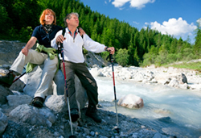
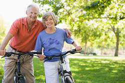

About Extreme Honeymoons
Page Menu
In the Beginning

Ted and Betty Russon have been happily married for 30 years. They look back on their honeymoon at Arches National Monument with great fondness. They have tried to keep the same spice in their marriage as they found on their honeymoon.
This amazing couple make it a practice to try out new extreme sports together, just for the fun of it. Their own honeymoon consisted of a wild mountain biking adventure in the beautiful slick red rock near Moab, Utah and through Arches National Monument. On this same trip they also spent 3 days white water rafting down the Colorado River.
Where We are Today
Extreme Honeymoons has been in business since 1976. Over 2000 couples have enjoyed these high-octane honeymoons. The Russons have also had several of their children get married and have enjoyed planning ultra extreme honeymoons for these lucky couples. One of the benefits of living in Utah is the wide variety of adventure activities in the state.

| Adventure | Duration |
|---|---|
| Ice Climbing on Bridal Veil Falls | 1-2 day Tour |
| Bungee Jumping off of Dead Horse Point | 2-3 day Tour |
| Bow Hunting or Pursuing Cougars in the Manti-Lasal National Forest | 1 week Tour |
| Parasailing from the Top of Mount Timpanogos | 1-2 day Tour |
| 4WD Safari Jeep Rendevous in Moab | 1 week Tour |
| Swimming with the Carp in Utah Lake | 1-2 day Tour |
| Heliskiing on Kings Peak | 1-2 day Tour |
| High Speed Drag Racing on the Salt Flats | 3 day Tour |
| Bobsled and Ski Jumping at the Utah Olympic Park | 2-3 day Tour |
What Makes Us Unique

Couples recently married who want to get to know each other better should think about trying an extreme honeymoon. The benefit of using the service provided by Extreme Honeymoons is that all the details are taken care of.
Equipment is delivered to the site, transportation and meals are provided, and lessons in the needed skills are given. All the newlyweds have to do is sign the injury release forms.
You could choose to have a guided adventure or go it on your own. If you have a daring proposal for an untried adventure, just tell the Russons and they will make your dreams come true.
Press Releases
Wild Thing Magazine, August 2012
If you believe the saying, you only get married once, then you will want to make your honeymoon a memorable experience. Extreme Honeymoons can help the couple that screams together, stay together.
They will expertly plan every step of your unforgetable trip so that all you will have to do is just survive. According to Ted Russon, the founder of Extreme Honeymoons, "What else would you want to do on your honeymoon? Some of the wild things they could plan for you include: kayaking on the Colorado River, bungee Jumping at Flaming Gorge Dam, bareback riding in the Bryce Canyon Rodeo, and an ATV safari across the Great Western Trail."
Utah Brides Magazine, May 2012
Brides-to-be might worry that their honeymoon may be a forgetable experience. If you think a candle lit dinner sounds boring and you have seen one too many movies, then consider an Extreme Honeymoon.
Let Ted Russon's Extreme Honeymoons plan all the details of a wild and crazy honeymoon adventure. These reasonable priced tours are totally safe and an insurance policy is included with the cost of all packages.
One recent newlywed breathlessly related this experience,"Like, it was the most awesome experience of my life!" So surprise your new spouse with a white-knuckle honeymoon.